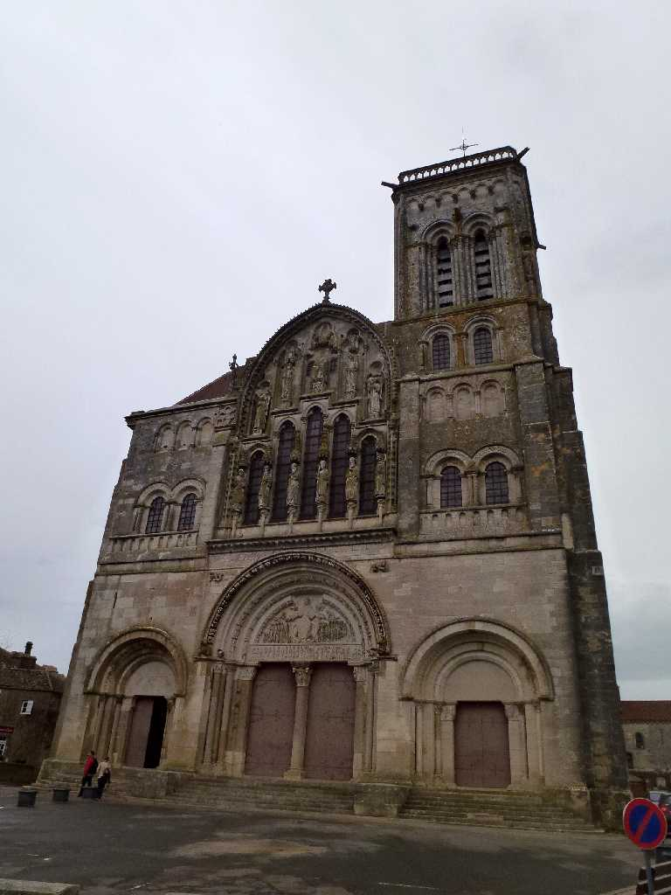
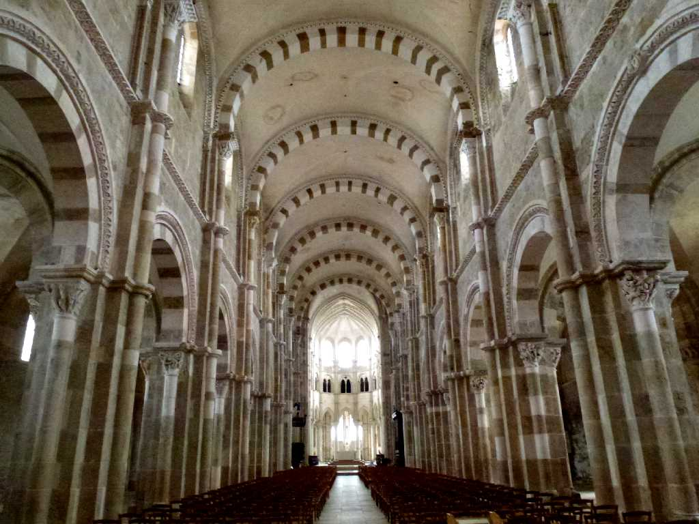
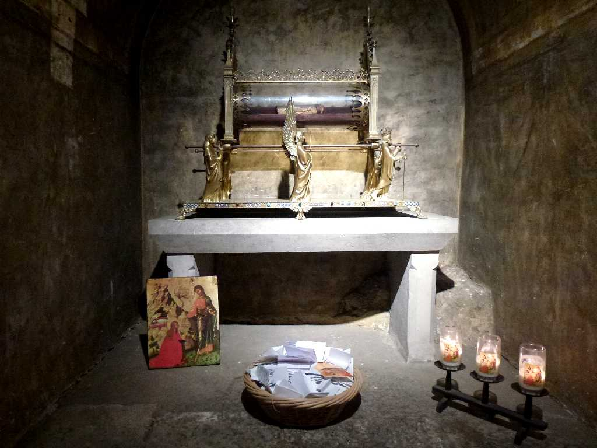
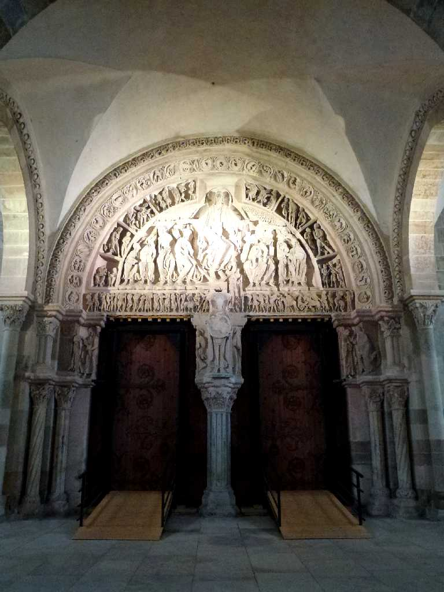
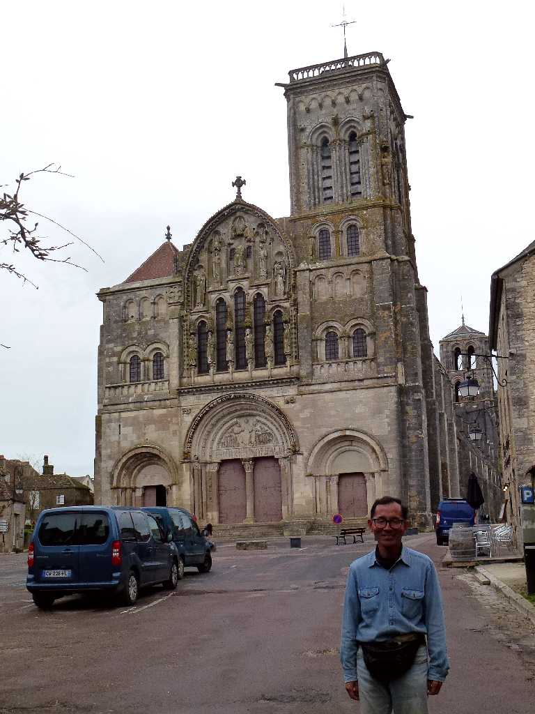

La basilique Sainte Marie Madeleine de Vézelay Vézelay
８６１年に教会の丘に創られたサントマドレーヌ大聖堂

La basilique Sainte Marie Madeleine de Vézelay
聖遺物としてマグダラのマリアの遺骸が祀られている

Les reliques de Marie Madeleine Restes
マグダラのマリアの遺物として頭蓋骨が安置されている

Tympan La basilique Sainte Marie Madeleine de Vézelay
キリストの昇天を描いたロマネスク彫刻の最高傑作の一つと云われるティンパヌム

April 3 2014 Vézelay